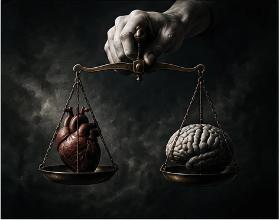

IDENTITY / SELF-PERCEPTION
The Self
How do we build a sense of who we are? How much of that identity is shaped by memory, other people, and our own beliefs?
Enter the questionAN INQUIRY INTO THE HUMAN MIND — 001
We question what we believe, examine why we behave as we do, and explore the space between the person we are and the person we imagine ourselves to be.
THE CENTRAL QUESTION
Our memories shape our identities. Our beliefs influence what we notice. Other people affect the choices we make. Yet much of everyday life passes without us closely examining these processes.
This is a place to slow down, investigate ideas, and approach familiar experiences from unfamiliar perspectives. Not every question has a simple answer. Some become more interesting when we examine them more carefully.
01 / THE EXPLORATION INDEX
Each inquiry begins with a concept and opens into a larger question about being human.
IDENTITY / SELF-PERCEPTION
How do we build a sense of who we are? How much of that identity is shaped by memory, other people, and our own beliefs?
Enter the questionCOGNITION / PERCEPTION
Why can two people interpret the same event differently? Discover cognitive biases and the limits of perception.
Examine the mindSOCIAL PSYCHOLOGY / CONFORMITY
When do we follow the group, resist it, or mistake social acceptance for truth?
Examine the crowd
04 / 05MORAL PSYCHOLOGY / ETHICS
How do emotion, intention, consequences, and social expectations influence moral judgments?
Examine moralityEXISTENTIALISM / MEANING
Must life have an inherent purpose, or can meaning emerge from the lives we choose to lead?
Question existence02 / INQUIRY ONE
The person we experience. The person we present. The person we believe ourselves to be.
We often describe ourselves through our personality, memories, values, relationships, and experiences. But these descriptions can change. We may behave differently in different situations, revise old beliefs, or understand a past event in a new way.
The psychological study of identity examines how people develop and maintain a sense of self. Self-perception and cognitive dissonance help us investigate the relationship between our actions, beliefs, and how we see ourselves.
A QUESTION TO CONSIDER
If your memories, beliefs, and personality changed over time, what would make you the same person?
PHILOSOPHICAL CONNECTION
Philosophers have debated personal identity, continuity, and authenticity for centuries. Psychological research can investigate how identity is experienced and formed; philosophical arguments ask what identity means and what makes it persist. These are related questions, but they are not identical.
03 / INQUIRY TWO
Seeing is not always the same as understanding.
Human cognition uses attention, memory, expectations, and prior knowledge to make sense of the world. These processes are essential, but they can also contribute to systematic errors in judgment.
Confirmation bias is the tendency to favour, interpret, or seek information in ways that support existing beliefs. It does not mean that every belief is wrong or that people are incapable of reasoning. It reminds us to examine how evidence is gathered and evaluated.
A QUESTION TO CONSIDER
When was the last time you actively searched for evidence that could prove your own opinion wrong?
PHILOSOPHICAL CONNECTION
Epistemology is the philosophical study of knowledge, justification, and belief. It asks what counts as evidence and how confidently we should claim to know something. Psychology can investigate the mental processes that affect how people reach those judgments.
04 / INQUIRY THREE
How much of our thinking belongs to us alone?
Human beings are social. Other people influence our behaviour, attitudes, and decisions in ways that can be helpful, harmful, or simply practical. Social norms allow people to coordinate their actions, but they can also create pressure to agree with a group.
Conformity describes changes in behaviour or judgment in response to group influence. The reasons vary: we may believe others know more, want to belong, or be uncertain about how to act. Not every agreement is conformity, and not every disagreement demonstrates independence.
A QUESTION TO CONSIDER
If everyone around you believed something strongly, what evidence would you need before deciding whether to agree?
PHILOSOPHICAL CONNECTION
Political and moral philosophy explore the balance between individual freedom, responsibility, and obligations to others. The difficult question is not whether society influences us, but how we should judge the influence it has.
05 / INQUIRY FOUR
Knowing what is right is not always simple.
Moral decisions can involve competing concerns: the consequences of an action, the intention behind it, the rules that should apply, and the needs of the people affected. Emotion and reasoning can both play roles in moral judgment.
Moral psychology studies how people make moral judgments and how these judgments relate to emotion, reasoning, development, and social context. It does not provide one universally accepted answer to every ethical dilemma.
A QUESTION TO CONSIDER
If an action produces a good outcome but violates a moral principle, should the outcome determine whether the action was right?
PHILOSOPHICAL CONNECTION
Consequentialism evaluates actions partly by their outcomes. Deontological approaches emphasize duties and moral constraints. Virtue ethics asks what good character and practical wisdom require. These traditions offer different ways to examine ethical questions rather than one simple formula.
06 / INQUIRY FIVE
Living in a world that does not answer every question.
People seek meaning through relationships, work, creativity, responsibility, belief, discovery, and service to others. The sources of meaning differ from one person to another and can change over the course of a life.
Existential philosophy considers freedom, responsibility, uncertainty, mortality, and the challenge of living without guaranteed answers. It explores how we respond to the conditions of existence, rather than promising a single solution that will suit everyone.
A QUESTION TO CONSIDER
Would a meaningful life need to have a purpose discovered by you, or could it be a purpose created through your choices?
PHILOSOPHICAL CONNECTION
Existentialist thinkers have explored how people confront freedom and responsibility. Absurdist thought, associated with Albert Camus, examines the tension between our desire for meaning and a world that offers no guaranteed final answer. These are philosophical positions to explore, not psychological diagnoses.
07 / TWO WAYS OF INQUIRING
Different disciplines can illuminate the same experience without asking exactly the same question.
01 / THE EMPIRICAL LENS
What can we observe, investigate, and test?
Psychology studies behaviour and mental processes through different research methods. Depending on the question, researchers may use experiments, observations, surveys, interviews, or other forms of evidence.
02 / THE CONCEPTUAL LENS
What do our experiences mean, and what should we believe or do?
Philosophy examines concepts, arguments, assumptions, knowledge, ethics, and questions about existence. It asks whether conclusions follow from reasons and whether our ideas are coherent.
Psychology and philosophy can inform one another, but philosophical arguments are not automatically empirical findings, and psychological observations do not settle every philosophical question.
08 / A THOUGHT EXPERIMENT
Imagine that you encounter information that challenges a belief you have held for years. The information appears credible, but accepting it would mean reconsidering something important about your identity.
There is no diagnostic answer here. This exercise is an invitation to notice how you approach disagreement, evidence, and uncertainty.
REFLECTION, NOT A PERSONALITY TEST.
YOUR REFLECTION
Select an answer to begin. The purpose is to examine your reasoning, not to label you as a particular kind of person.
Your response is for personal reflection. It does not measure intelligence, diagnose a condition, or determine whether your beliefs are correct.
09 / ABOUT THIS SPACE
The Inner Atlas is an educational project exploring ideas from psychology and philosophy in clear, accessible language.
Its purpose is to explain concepts, distinguish evidence from interpretation, and invite careful thinking about familiar aspects of human life. It values curiosity without pretending that complex questions have effortless solutions.
The website is for learning and reflection. Its thought experiments are not clinical assessments, and its content is not a substitute for professional psychological care.
Return to the beginning